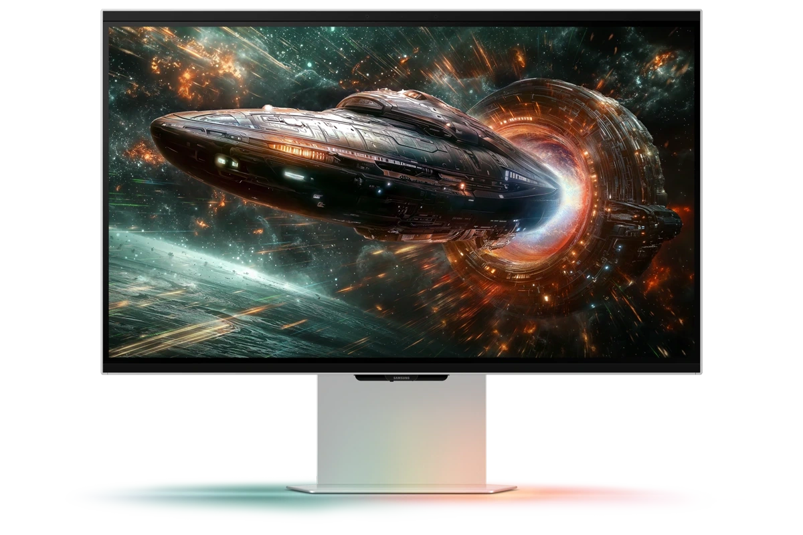

黑神話：悟空
Black Myth: Wukong
以西遊記為靈感的動作冒險，走入山林、古寺與神怪交織的世界。
Windows PC · Steam
Windows PC · Odyssey 3D Hub

Black Myth: Wukong
以西遊記為靈感的動作冒險，走入山林、古寺與神怪交織的世界。
Windows PC · Steam

Stellar Blade
化身伊芙探索末日地球，在華麗劍技與巨大敵人之間展開高速戰鬥。
Windows PC · Steam

The First Berserker: Khazan
以精準招架與強烈打擊感迎戰強敵；近身攻防適合感受前後距離。
Windows PC · Steam

Lies of P
在黑暗童話城市與失控人偶戰鬥，掌握格擋、武器組合與戰鬥節奏。
Windows PC · Steam

Hogwarts Legacy
探索十九世紀的魔法世界、城堡與禁忌森林，學習咒語並展開冒險。
Windows PC · Steam

FINAL FANTASY VII REMAKE INTERGRADE
跟隨克勞德深入米德加，以即時戰鬥結合指令策略重返經典故事。
Windows PC · Steam

Stray
化身流浪貓，在霓虹巷弄、屋頂與機器人城市之間尋找回家的道路。
Windows PC · Steam

TEKKEN 8
以立體場景與激烈近身攻防呈現對戰張力，體驗系列招牌格鬥節奏。
Windows PC · Steam

Palworld
在開放世界收集帕魯、建造基地，與夥伴一同探索、製作與戰鬥。
Windows PC · Steam

SILENT HILL 2
走入霧氣籠罩的小鎮，在探索與解謎之間體會心理恐怖的壓迫感。
Windows PC · Steam

Senua’s Saga: Hellblade II
以電影式演出帶領玩家穿越維京時代的冰島，展開沉浸感強烈的旅程。
Windows PC · Steam

Sonic Racing: CrossWorlds
穿越跨界賽道與傳送環，在陸地、海洋和天空展開高速競賽。
Windows PC · Steam

Little Nightmares II
在巨大的異常世界中解謎、躲藏與求生，感受角色和環境的尺度差異。
Windows PC · Steam

DRAGON BALL Z: KAKAROT
重溫悟空與 Z 戰士的故事，在探索與高速戰鬥之間體驗經典篇章。
Windows PC · Steam

Atomic Heart
探索復古未來風格的設施，以能力、近戰與槍械迎戰失控機器人。
Windows PC · Steam

F.I.S.T.: Forged In Shadow Torch
操作揮舞巨大鐵拳的兔子，探索柴油龐克城市，展開橫向動作與關卡冒險。
Windows PC · Steam

SpongeBob SquarePants: The Cosmic Shake
和海綿寶寶、派大星走進願望世界，穿越奇幻場景，解開混亂的冒險。
Windows PC · Steam

在奇幻開放世界探索，以劍術迎戰敵人，逐步成長為能對抗黑暗勢力的英雄。
Windows PC · Steam

Grand Theft Auto III - The Definitive Edition
重返自由市，體驗開放城市中的駕駛、任務與犯罪故事；本頁對應決定版。
Windows PC · Steam

Grand Theft Auto: Vice City - The Definitive Edition
在八〇年代風格的罪惡城市展開開放世界冒險；本頁對應決定版。
Windows PC · Steam

Grand Theft Auto: San Andreas - The Definitive Edition
跟隨 CJ 返回聖安地列斯，在城市與鄉間展開故事任務；本頁對應決定版。
Windows PC · Steam

Disney Epic Mickey: Rebrushed
化身米奇，以畫筆與稀釋劑改變環境，穿越色彩豐富的立體平台關卡。
Windows PC · Steam

The Smurfs - Dreams
走進藍色小精靈的夢境，跳躍、探索奇幻平台，為村莊尋找轉機。
Windows PC · Steam

DRAGON BALL: Sparking! ZERO
駕馭七龍珠角色的高速移動與招式，在立體場地展開氣勢強烈的對戰。
Windows PC · Steam

Minecraft Dungeons
在 Minecraft 世界展開地下城冒險，蒐集裝備、擊退怪物並探索關卡。
Windows PC · Steam

THE KING OF FIGHTERS XV
選擇喜愛的格鬥角色組隊，以招式連段與攻防節奏挑戰對手。
Windows PC · Steam

Persona 3 Reload
在校園生活與深夜戰鬥之間切換，與夥伴培養羈絆並探索神祕事件。
Windows PC · Steam

Grounded
身形縮小後，普通庭院也成為巨大荒野；探索、製作與建造基地以求生存。
Windows PC · Steam

Pacific Drive
駕駛並改造愛車，穿越異常現象密布的禁區，蒐集資源並設法平安返回。
Windows PC · Steam

PAYDAY 3
和隊友規劃搶劫行動，在潛行與激烈槍戰之間選擇自己的路線。
Windows PC · Steam

Visions of Mana
在廣闊原野展開瑪那與聖劍的故事，運用精靈力量進行動作戰鬥。
Windows PC · Steam

OCTOPATH TRAVELER
跟隨八位主角展開各自的旅途，在點陣角色與立體場景中體驗回合制戰鬥。
Windows PC · Steam

Shin Megami Tensei V: Vengeance
探索異變後的東京，招募惡魔成為夥伴，在回合制戰鬥中運用屬性策略。
Windows PC · Steam

SAND LAND
在鳥山明筆下的沙漠世界駕駛多樣機器，與夥伴展開動作冒險。
Windows PC · Steam

在荒涼場景中探索線索，面對瘦長鬼影帶來的追逐與心理壓迫。
Windows PC · Steam

Layers of Fear
以第一人稱走入藝術與瘋狂交織的場景，解開環境中的心理恐怖謎團。
Windows PC · Steam

在機械生命體失控的末世國度探索，結合能力成長與橫向動作挑戰。
Windows PC · Steam

The Plucky Squire
故事書角色跳出書頁，在平面與立體世界間穿梭，解謎並拯救朋友。
Windows PC · Steam

S.T.A.L.K.E.R. 2: Heart of Chornobyl
在車諾比特異區探索與搜尋物資，應對異常現象、變異體和敵對勢力。
Windows PC · Steam

Darksiders Genesis
以俯視角探索暗黑血統的世界，操作天啟騎士進行戰鬥與解謎。
Windows PC · Steam

Ghostrunner
在未來城市中以高速跑酷與刀劍突破關卡，掌握移動與出手時機。
Windows PC · Steam

Deep Rock Galactic
扮演太空矮人探索可破壞的洞穴，與隊友合作採礦並擊退外星生物。
Windows PC · Steam

OCTOPATH TRAVELER II
八位旅人踏上全新故事，結合回合制策略與細緻的 HD-2D 場景。
Windows PC · Steam

Ghostrunner 2
再度化身未來忍者，在末日城市以高速跑酷、刀劍與技能迎戰敵人。
Windows PC · Steam

Grounded 2
再次縮小身形，在更廣大的環境探索、製作與建立基地，獨自或合作求生。
Windows PC · Steam

Scorn
在異形般的生物機械環境探索，以第一人稱解謎感受壓迫氛圍。
Windows PC · Steam

Little Nightmares III
跟隨小洛與小寂在夢魘世界前進，合作解謎並尋找離開虛無之地的路。
Windows PC · Steam

在未來紐約扮演警探，利用科技追查連環案件，探索永生背後的代價。
Windows PC · Steam

Wandering Sword
以像素武俠風格探索江湖，修練武學，讓選擇改變角色的冒險。
Windows PC · Steam

DAEMON X MACHINA: Titanic Scion
穿上可自訂的機甲戰衣，在地面與空中自由移動，搭配裝備展開戰鬥。
Windows PC · Steam

SOULCALIBUR VI
操作各具風格的武器角色，在立體場地體驗刀劍交鋒與攻防節奏。
Windows PC · Steam

Jujutsu Kaisen Cursed Clash
操作咒術師與咒靈，運用角色能力，在二對二合作戰鬥中配合隊友。
Windows PC · Steam

Tiny Tina's Wonderlands
在奇幻桌遊般的世界自訂英雄，把射擊、近戰與法術組合成冒險方式。
Windows PC · Steam

Tales of Arise
跟隨主角群反抗壓迫，透過角色合作與動作戰鬥推進解放之旅。
Windows PC · Steam

Darksiders III
化身天啟騎士「狂怒」，在末日地球探索，以鞭擊與能力迎戰強敵。
Windows PC · Steam

Satisfactory
探索外星球，建造並擴充自動化工廠，讓輸送帶與生產線連結起來。
Windows PC · Steam

SCARLET NEXUS
在腦部科技發達的世界運用念力，結合夥伴能力展開超腦力動作戰鬥。
Windows PC · Steam

WUCHANG: Fallen Feathers
在明末巴蜀背景下，探索疫病與異變交織的世界，挑戰類魂動作戰鬥。
Windows PC · Steam

GUNDAM BREAKER 4
組裝自己的鋼彈模型，以零件和武器搭配打造戰鬥風格。
Windows PC · Steam

引導提線木偶艾比逃離馬戲團，在充滿童話感的橫向場景中解謎。
Windows PC · Steam

Aliens: Fireteam Elite
三人小隊在狹長通道與異星設施迎戰異形，考驗火力配置與合作。
Windows PC · Steam

逃離被實境節目監控的城市，交錯操作逃亡者與幕後協助者。
Windows PC · Steam

ASTRONEER
在色彩鮮明的異星地表挖掘、建造基地，踏上沙盒太空探索。
Windows PC · Steam

Banishers: Ghosts of New Eden
跟隨驅靈搭檔調查鬧鬼事件，在生死抉擇與近身戰鬥間前進。
Windows PC · Steam

Bloodstained: Ritual of the Night
探索惡魔城堡、取得碎片能力，展開橫向探索與頭目戰；官方清單以 Bloodstained 簡稱列示，版本請再核對 Hub。
Windows PC · Steam

CRISIS CORE –FINAL FANTASY VII– REUNION
以札克斯為主角，體驗 FINAL FANTASY VII 前傳的即時戰鬥與劇情。
Windows PC · Steam

Destroy All Humans! 2 - Reprobed
扮演外星人，以超能力、奇特武器與飛碟在開放場景中大鬧地球。
Windows PC · Steam

Enotria: The Last Song
在義大利民俗風格的世界蒐集面具，切換能力挑戰強敵。
Windows PC · Steam

在北歐風格城市中潛行，切換角色、觀察路線，追查失蹤親人的線索。
Windows PC · Steam

Expeditions: Rome
指揮羅馬軍團，透過回合制戰術、隊伍養成與選擇改變戰役進程。
Windows PC · Steam

Five Nights at Freddy's: Security Breach
在大型娛樂中心躲避機械人偶追擊，探索設施、解開秘密並設法逃生。
Windows PC · Steam

Ghostwire: Tokyo
以手勢施展超自然能力，穿梭東京街頭，對抗神祕來訪者。
Windows PC · Steam

GUILTY GEAR -STRIVE-
以鮮明動畫風格呈現高速格鬥，掌握角色招式、攻防與場邊破牆。
Windows PC · Steam

駕駛大型機甲，以不同武器配置在工業戰場執行任務；取得與營運狀態請查官方商店。
Windows PC · Steam

在戰亂與異常生物籠罩的國度，依靠觀察探索，近身迎戰未知威脅。
Windows PC · Steam

High On Life
帶著會說話的外星武器展開賞金獵人冒險，在怪誕星球間射擊與探索。
Windows PC · Steam

Kena: Bridge of Spirits
跟隨靈魂嚮導奇納與腐靈伙伴，探索森林、解謎並迎戰被腐化的敵人。
Windows PC · Steam

MONGIL: STAR DIVE
蒐集幻獸並切換三人小隊，在奇幻世界展開高速動作戰鬥與冒險。
Windows PC · Netmarble Launcher / Epic Games Store（版本請在 Hub 核對）

Raji: An Ancient Epic
走入印度神話啟發的世界，操作拉吉以神授武器對抗惡魔。
Windows PC · Steam

Ready or Not
指揮特警小隊進入高風險現場，重視破門、觀察、協調與交戰規則。
Windows PC · Steam

Remnant: From the Ashes
在災變世界中探索、射擊與近身戰鬥，可與同伴組隊迎戰巨大頭目。
Windows PC · Steam

Returnal™
受困外星輪迴，穿梭高速彈幕與不斷變化的環境，逐步拼湊真相。
Windows PC · Steam

SD Gundam Battle Alliance
操作 SD 鋼彈機體組隊出擊，施展連段、遠程武器與必殺技。
Windows PC · Steam

The Callisto Protocol™
在木衛四的恐怖監獄中求生，結合近身攻防與射擊對抗變異生物。
Windows PC · Steam

以吸取裝置清除異星黏液，解開環境障礙並探索被污染星球的秘密。
Windows PC · Steam

運用子彈時間與強烈近身攻擊，在快節奏第一人稱戰場中突破包圍。
Windows PC · Steam

以超級英雄視角飛越城市，使用高速移動與超能力救援及戰鬥。
Windows PC · Steam

Vampire: The Masquerade® - Bloodlines™ 2
在西雅圖夜色中扮演吸血鬼，運用氏族能力與選擇介入黑暗勢力。
Windows PC · Steam

Way of the Hunter
觀察野生動物的蹤跡與習性，在廣闊自然環境中進行狩獵模擬。
Windows PC · Steam

在立體街區中射擊殭屍、蒐集裝備，以合作火力突破敵群。
Windows PC · Steam

Goat Simulator 3
化身山羊在開放世界四處搞破壞，以荒誕互動與合作任務製造混亂。
Windows PC · Steam

Immortals of Aveum
以三種魔法力量進行第一人稱戰鬥，穿越奇幻戰場與大型遺跡。
Windows PC · Steam

DRAGON QUEST X Offline
以離線單人方式探索五大種族的世界，組隊展開回合制戰鬥與故事冒險。
Windows PC · Steam

踩上高速懸浮滑板，以貓咪主角的連段攻擊迎戰變異玩具。
Windows PC · Steam

Mafia: The Old Country
回到二十世紀初的西西里，體驗家族忠誠、槍戰與犯罪敘事。
Windows PC · Steam

The Talos Principle II
探索機器人文明與宏偉建築，解開光束、裝置與空間邏輯謎題。
Windows PC · Steam

Lost Soul Aside
與神祕伙伴並肩，以可變形武器和高速連段迎戰奇幻敵人。
Windows PC · Steam

Romancing Saga 2 Revenge of the Seven
透過皇帝傳承、陣形與閃悟系統，帶領不同世代對抗七英雄。
Windows PC · Steam

Octopath Traveler 0
以 HD-2D 風格展開復仇與重建的旅程，編組隊伍挑戰回合制戰鬥。
Windows PC · Steam

Marvel's Midnight Suns
集結漫威英雄，結合卡牌與回合制戰術，在超自然危機中配置隊伍。
Windows PC · Steam

指揮具特殊能力的科學家小隊，利用即時戰術潛行與環境配合完成任務。
Windows PC · Steam

Thymesia
在瘟疫肆虐的王國以快速刀刃與瘟疫武器戰鬥，找回關鍵記憶。
Windows PC · Steam

探索浮空群島，在物理互動戰鬥中擊飛敵人、連鎖攻擊並製作裝備。
Windows PC · Steam

受困地下研究設施，和同伴蒐集資源、製作工具，面對科學實驗失控的危機。
Windows PC · Steam
104 款依 2026.11.11 官方 Hub 清單 ↗。圖像與商標屬各權利人。

The Outlast Trials
在恐怖實驗場景中潛行、合作與求生，想辦法完成考驗並逃離威脅。
Windows PC · Steam

Avowed
以第一人稱探索奇幻世界，運用武器、法術與對話選擇展開冒險。
Windows PC · Steam